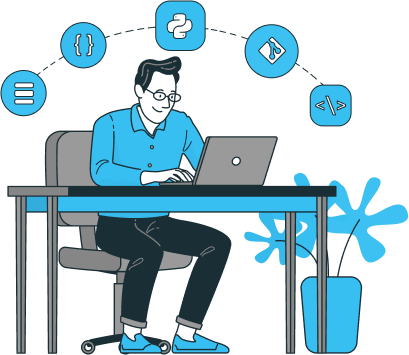

Школа {программирования} для тех, кому нужны реальные
навыки,
а не просто сертификат
Пройдите тестирование, чтобы получить доступ к бесплатным вводным урокам
Пройти тестированиеКакие технологии вы изучите:

Язык программирования Python
Сети
Базы данных
Фреймворки Flask и Django
Отладка и тестирование
Docker
Git
Это необходимый минимум для современного backend-разработчика
-
Весь материал разбит на небольшие уроки
Теория и практика подаются маленькими порциями. Так вам будет легче усваивать новые знания.
-
Обучение
через практикуВсё, что вы узнали, вы тут же начинаете применять на практике. Вы сразу видите результаты своего труда.
-
Нет ограничений
по времениМожно совмещать учёбу с работой и другими делами. Не нужно выпрашивать академический отпуск, если пришлось сделать перерыв.